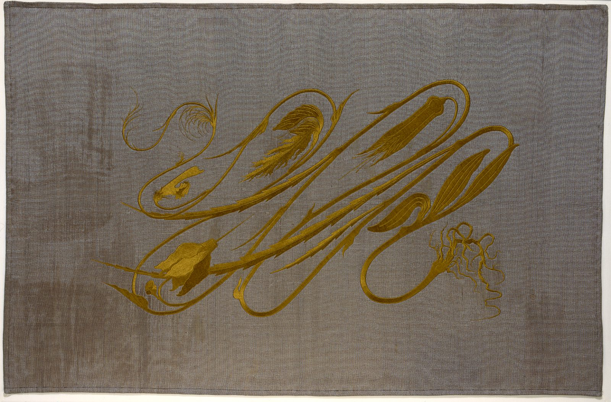

References / Textile / 153
Cyclamen (“Whiplash”)
wall hanging by Hermann Obrist
The embroidery that gave the whiplash line its name: a cyclamen plant, from roots to flowers, drawn as long gold stems that loop and snap back across a plain gray-brown linen ground.
- Source
- Münchner Stadtmuseum: Großer Wandbehang mit Seidenstickerei („Peitschenhieb“), T-49/63
- Creator
- Hermann Obrist (design)
- Made
- 1895 (Münchner Stadtmuseum); 1894 (Wikipedia, Art Nouveau)
- Style
- Art Nouveau (agent-proposed, not yet reviewed by a person)
- Moods
- Dynamic, organic, restless
- Evidence
- Downloaded and inspected the museum’s own image of object T-49/63 from its online collection (2000 × 1316 px). The same file is on Wikimedia Commons. Read the museum’s object page.
- Reviewed
- Rights
- Open license, stored. License: CC-BY-SA-4.0. Rights policy

Context
The Münchner Stadtmuseum records a large wall hanging with silk embroidery (“Peitschenhieb”, whiplash), designed by Hermann Obrist, dated 1895, linen with silk embroidery, 119 × 183 cm, inventory number T-49/63, in its fashion and textiles collection. Münchner Stadtmuseum.
Wikipedia dates the hanging, Cyclamen, to 1894 and says that a description in Pan magazine compared it to the “sudden violent curves generated by the crack of a whip”. The term “whiplash”, first used to ridicule the style, is now applied to the characteristic curve of Art Nouveau. Wikipedia: Art Nouveau.
Observed
- The ground is a plain gray-brown linen with a fine horizontal weave, left empty around a central motif that fills about two thirds of the width.
- The motif is embroidered in one colour, an olive gold silk with a slight sheen.
- Long stems run mainly on a diagonal from lower left to upper right. Each one swings out, loops back in a tight hairpin turn, and runs back, so the stems cross one another several times.
- The stems swell and taper, with small hooked spurs along their length.
- At the lower right a tangle of thin roots and a bulb; at the upper left and centre, feathery leaves and closed flower buds; at the lower left a larger flower with folded petals.
- The work has no border or frame line; the hemmed edge of the cloth is the only edge.
Why it belongs
This is the grammar’s first term in its purest form: one plant, one colour, and a line that carries all the movement. It has no symmetry and no straight line.
The single warm metallic colour on a neutral ground shows that the style does not need many colours; the curve alone identifies it.
Borrow
Draw a divider or a background flourish as one long line that loops back on itself, and let its width swell and taper.
Put one ornamental figure in a single warm colour on a large, quiet neutral field.
Measured
Machine-extracted by tools/image-traits.py on . Full measurement.
- Mean chroma
- 0.09
- Palette
- #78736f 37%
- #655b54 27%
- #70675d 16%
- #6c4e08 3%
- #5f4105 3%
- #f8f3ea 2%
- #5e5042 2%
- #6d5624 2%

